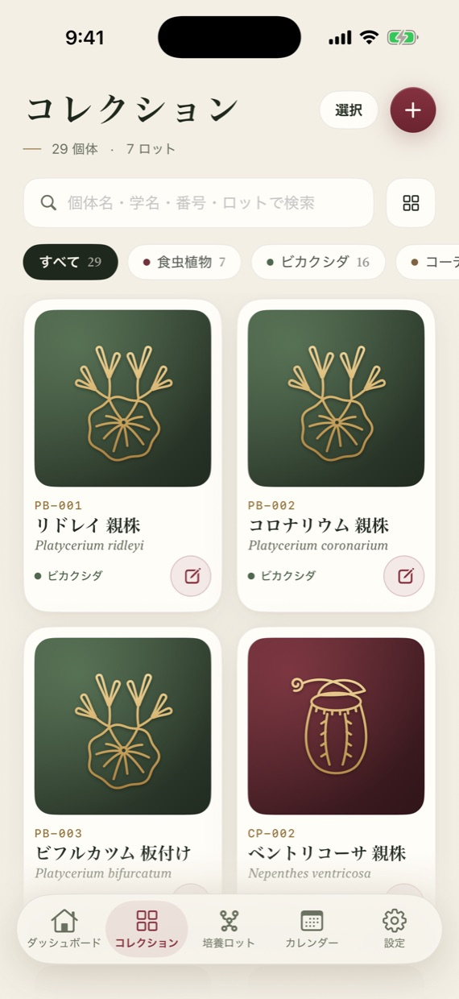
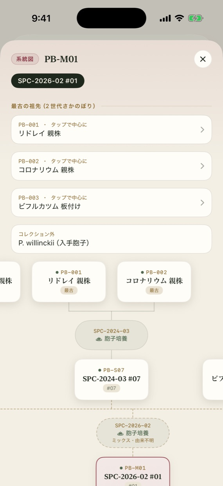
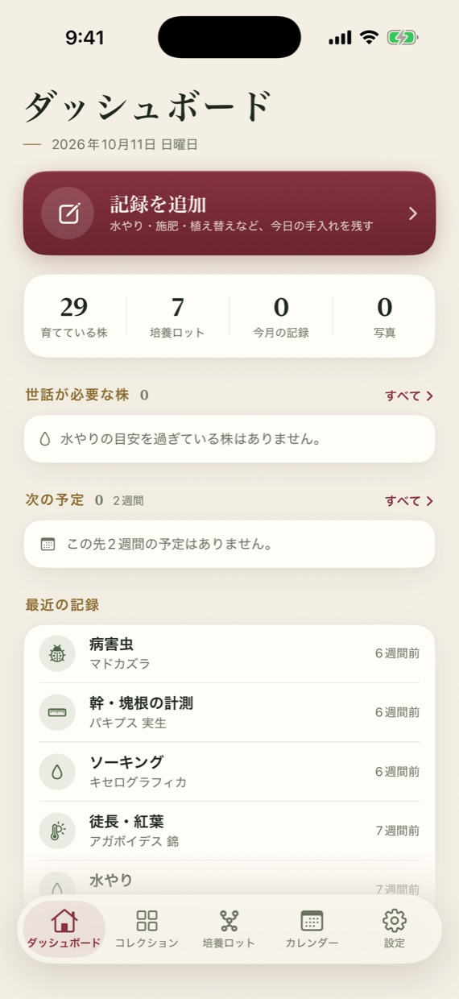
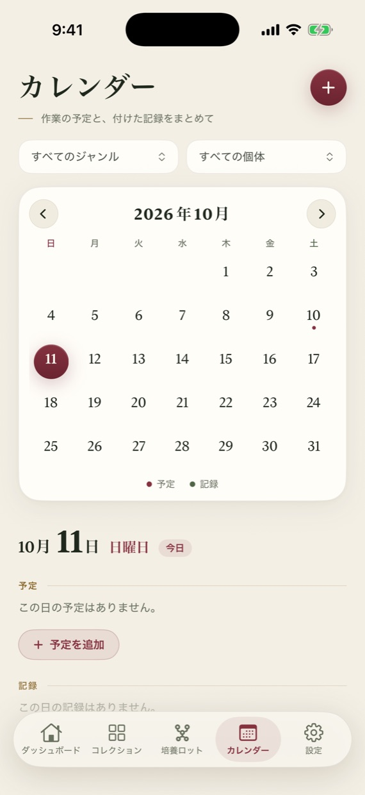

この株は、どの親から生まれたのか。
何年たっても、たどれるように。
食虫植物・ビカクシダ・塊根植物・アロイドなど、15のジャンルに合わせた記録の台帳です。水やりや植え替えの記録に加えて、胞子培養・実生・株分けで生まれた株の「系譜」を、親から子まで自動でつないで残します。
株ごとの記録
1株ずつ番号を付けて登録し、写真・水やり・施肥・植え替え・計測を残せます。記録の項目はジャンルに合わせて用意されています。グループに分けて、まとめて記録することもできます。
系譜をつなぐ「ロット」
胞子をまいた容器、種をまいた鉢、分けた子株を「ロット」として記録します。親の株をつなぎ、育った株を選ぶと、親 → ロット → 子 の系譜が自動でつながり、何世代でも系統図でたどれます。
系統書と、本物の証明
株の系統書を PDF で作れます。照合用の QR を読むと、発行されたあと書き換えられていないか、誰が発行したかを確かめられます。株を記録ごとファイルで譲ることもできます。
水やりの目安と予定
水やりの記録から株ごとの間隔を割り出し、季節や休眠も考えて「今日水やり」を知らせます。植え替えなどの予定は、○日ごと・毎週・毎月の繰り返しで通知できます。
成長を見返す
塊根の直径や株高、葉の枚数などの計測は、グラフで変化を見られます。写真に名前や記録を添えた SNS 投稿画像も作れます。
料金
ベーシック（無料）
プレミアム
A ledger for your plants and their lineage
Bota-Log keeps records of each plant — and the lineage that links parents to offspring. Record fields are tailored to 15 genres such as carnivorous plants, staghorn ferns, caudiciforms and aroids.
- Records for every plant — number each plant and keep photos, watering, feeding, repotting and measurements. Sort plants into groups and record for many at once.
- Lots that link generations — record spore cultures, seedlings and divisions as lots. Link the parents, select the plants that grow, and the lineage is connected automatically.
- Certificates you can verify — make a certificate of lineage as a PDF. Its QR code shows whether it has been altered and who issued it. Give a plant away together with its records.
- Watering guide and plans — the app learns each plant's watering interval, adjusting for seasons and dormancy. Plans can repeat every N days, weekly or monthly.
- See growth — chart caudex diameter, height or leaf counts over time, and make social posts with your photos.